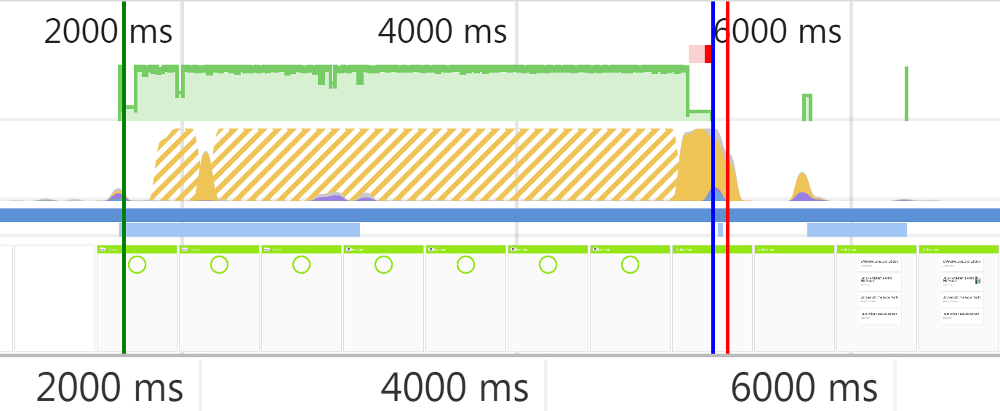
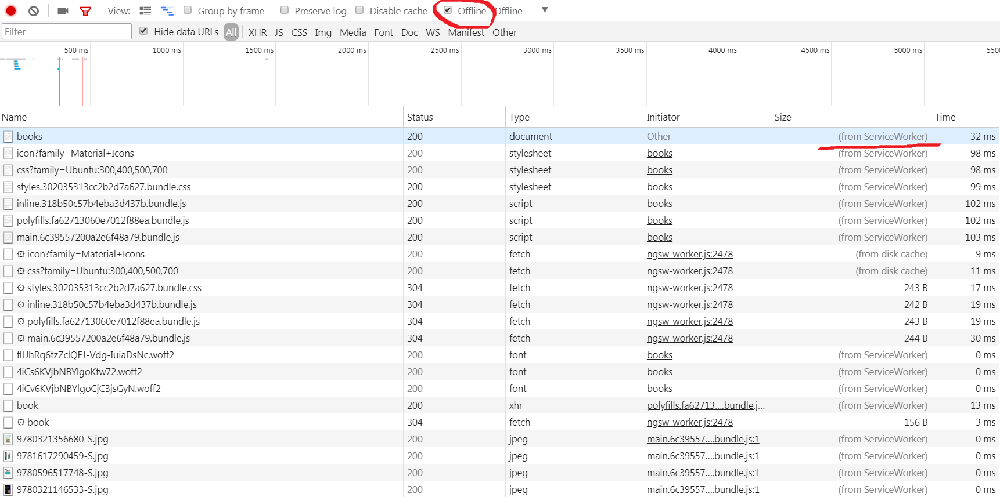
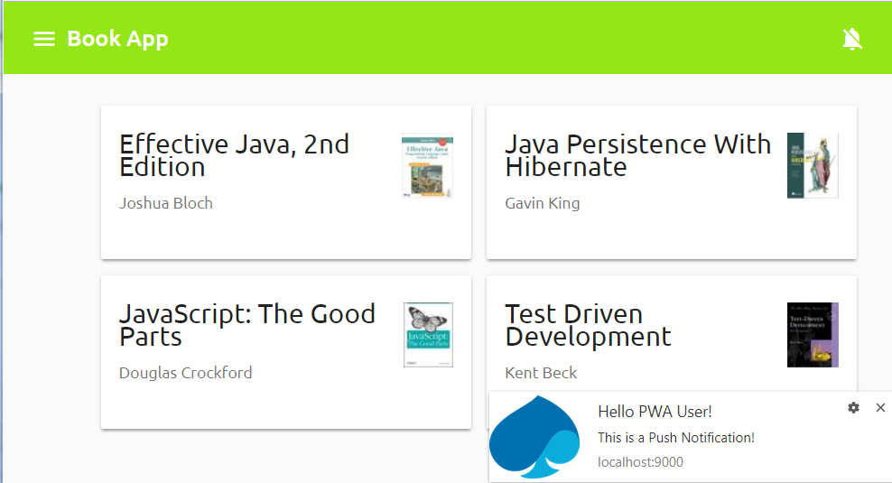

Progressive Web Apps
Mai 2018 State
Progressive Web Apps (PWAs)
PWAs are regular web applications which make extensive use of new browser APIs. These APIs make PWAs:
- installable
- load in full screen mode
- load fast
- work offline
- receive push notifications
Users have the impression they use a native app.
Let's start

Web App Manifest
to make the app
installable
and load in full screen mode
Web App Manifest
is a W3C standard implemented by most browsers
(...) provides information about an application (such as name, author, icon, and description) in a JSON text file. The purpose of the manifest is to install web applications to the home screen of a device
manifest.json
{
"name": "Book Application",
"short_name": "BookApp",
"start_url": "/",
"icons": [
{
"src": "android-chrome-192x192.png",
"sizes": "192x192",
"type": "image/png"
},
{
"src": "android-chrome-512x512.png",
"sizes": "512x512",
"type": "image/png"
}
],
"theme_color": "#ffffff",
"background_color": "#ffffff",
"display": "standalone"
}
index.html
<link rel="manifest" href="assets/manifest/manifest.json">Web App Manifest Generators
Preparing all assets needed by the Web App Manifest may be time consuming, so let's use one of available online generators: https://realfavicongenerator.net/
As a base picture use assets/capgemini-spade.svg
Chrome Dev Tools
So we've reached the state
on the 1-manifest branch...
App Shell
to make the app fast :)
What is an App Shell?
An application shell is the minimal HTML, CSS, and JavaScript powering a user interface
How to build an App Shell into our app?
We'll make use of Angular Universal and Angular CLI
What does an App Shell have to do with Angular Universal?
We are going to pre-render the AppComponent at build time using Angular Universal
Let's add an Universal bundle to our app:
ng generate universal ssr-appnpm installLet's make use of the Angular CLI's App Shell generator:
ng generate app-shell book-app-shell
--universal-app=ssr-app --route=app-shellBecause of this bug comment out the RouterModule and its import from the app.module.ts before.
What does
ng generate app-shelldo?
- adds a new component called
AppShellComponent - adds the
/app-shellroute linked to theAppShellComponent - adds both the
AppShellComponentand the/app-shellroute only to the Universal bundle (AppServerModule) - adds the
appShellsection toangular-cli.json
Now executing
ng build --prod:
- pre-renders the
/app-shellroute - takes the HTML output and
- adds it to
dist/index.html
AppShellComponent may (and should) be changed
app-shell.component.html (<div> is added and its height is set because of this bug)
<div class="container">
<mat-spinner color="accent" [diameter]="140"></mat-spinner>
</div>
app-shell.component.scss
div.container {
height: 160px;
mat-spinner {
margin: 0 auto;
}
}
app.server.module.ts
@NgModule({
imports: [... MatProgressSpinnerModule]
})
export class AppServerModule {}
We'll add a convenience script for starting the server in production mode
npm install express-history-api-fallback --save-devserver/server.ts
const fallback = require('express-history-api-fallback');
const root = `${__dirname}/../dist`;
app.use(express.static(root));
app.use(fallback('index.html', {root}));
package.json
"scripts": {
"server:prod": "./node_modules/.bin/npm-run-all --parallel server build"
}
App Shell in action
So we've reached the state
on the 2-app-shell branch...
Service Worker
to make the app work offline
Add Service Worker to the app (1)
npm install @angular/service-workerapp.module.ts
import {ServiceWorkerModule} from '@angular/service-worker';
@NgModule(
imports: [
ServiceWorkerModule.register('/ngsw-worker.js',
{enabled: environment.production})]
})
export class AppModule {}
angular-cli.json
"apps": [
{
"serviceWorker": true
}
]
Add Service Worker to the app (2)
src/ngsw-config.json
{
"index": "/index.html",
"assetGroups": [
{
"name": "app",
"installMode": "prefetch",
"resources": {
"files": [
"/assets/manifest/favicon.ico",
"/index.html"
],
"versionedFiles": [
"/*.bundle.css",
"/*.bundle.js",
"/*.chunk.js"
]
}
},
{
"name": "assets",
"installMode": "lazy",
"updateMode": "prefetch",
"resources": {
"files": [
"/assets/**"
]
}
},
{
"name": "fonts",
"resources": {
"urls": [
"https://fonts.googleapis.com/**",
"https://fonts.gstatic.com/**",
"http://covers.openlibrary.org/**"
]
}
}
],
"dataGroups": [
{
"name": "api-freshness",
"urls": [
"/api/book"
],
"cacheConfig": {
"strategy": "freshness",
"maxSize": 100,
"maxAge": "3d",
"timeout": "10s"
}
}
]
}
For details on configuration please refer to Angular Guide
Now executing
ng build --prodadds:
/dist/ngsw-worker.jswhich is in fact the Service Worker- and its runtime configuration
/dist/ngsw.jsonused to check which files should be cached, which expired, etc.
Service Worker in action
So we've reached the state
on the 3-service-worker branch...
Push Notifications
to engage app users
(excluding ones)
Web Push Notifications are in fact based on two browser standards:
- Push API allows messages to be pushed from a server to a browser (even when the site isn't focused or the browser is closed)
- Notifications API displays native system notifications to the user
We can't push notifications from our server directly. Instead, a Push Service specific to a browser is to be used.
https://developers.google.com/web/fundamentals/push-notifications/
Step 1: Client Side

Step 2: Send a Push Message

Step 3: Push Event on the User's Device
We need to uniquely identify our server to Push Services.
Therefore we are going to generate a VAPID (Voluntary Application Server Identification) key pair for that.
We make use of the web-push library:
npm install web-pushGenerating VAPID keys for our server:
node_modules\.bin\web-push generate-vapid-keys --jsonSubscribing to Push Notifications
sw-push-sub-btn.component.ts
import {SwPush} from '@angular/service-worker';
@Component(...)
export class SwPushSubBtnComponent {
private readonly VAPID_PUBLIC_KEY = 'BK8...';
constructor(private swPush: SwPush) {}
subscribe() {
this.swPush.requestSubscription({
serverPublicKey: this.VAPID_PUBLIC_KEY
})
.then(subscription => {
// send the subscription to our server
})
.catch(err => {
console.error('swPush.requestSubscription() failed', err);
});
}
}
Send a Push Message
server.ts
import * as webPush from 'web-push';
const vapidKeys = {
publicKey: 'BK8...',
privateKey: '77ne...'
};
webPush.setVapidDetails(
'https://github.com/devonfw-ng-adv-training',
vapidKeys.publicKey,
vapidKeys.privateKey
);
app.post('/api/message', (req, res) => {
Promise.all(subscriptions.map(sub => webPush.sendNotification(
sub, JSON.stringify({
notification: {
title: 'Hello PWA User!',
body: 'This is a Push Notification!',
icon: 'assets/manifest/android-chrome-192x192.png',
vibrate: [100, 50, 100],
data: {
dateOfArrival: Date.now(),
primaryKey: 1
}
}
}))))
.then(() => res.sendStatus(200))
.catch(err => {
console.error('Error sending notification, reason: ', err);
res.sendStatus(500);
});
}
);
Push Notifications in action
